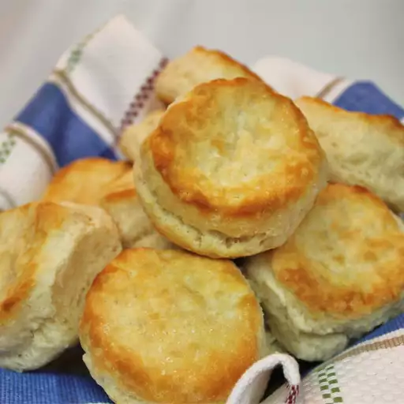

Southern Biscuits

The buttery end result of this recipe
This recipe was refined over time and evolved into a premium biscuit recipe.
Like any biscuit recipe worth a damn, the key ingredient is buttermilk. The
fats take it the rest of the way. And no sugar. Never sugar.
Ingredients
- Lard
- butter
- flour
- buttermilk
Steps
- Preheat oven to 375F/li>
- Mix dry ingredients
- Grate frozen lard and butter
- Combine fats with dry ingredients
- Add milk
- Fold ingredients together, and dust surface with flour
- Shape biscuits by hand, using a little flour
- Bake for 30 min